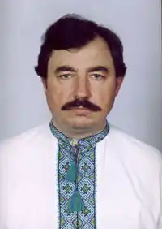

Юрик Полян-Пилип Сергійович народився 1 грудня 1956 року в селі Баландине Кам'янського району на Черкащині.
Закінчив Звенигородський сільськогосподарський технікум (1975), Дніпропетровський сільгоспінститут (1983), відділення журналістики Київської ВПШ (1989). Працював обліковцем рільничої бригади, агрономом, заввиробничим відділком колгоспу, журналістом районної газети (смт Томаківка на Дніпропетровщині), обласної молодіжки "Прапор юності" (Дніпропетровськ), обласного радіо (Запоріжжя), міської газети "Запорозька Січ". Останні десять років перед пенсією – редактор відділу обласної газети "Запорізька правда".
Друкувати твори почав у районній газеті "Радянське життя" (смт Томаківка на Дніпропетровщині) 1978 року. Потім публікувався в обласних газетах, "Сільських вістях", "Голосі України", альманахах, колективних збірках. Серед них: журнали "Перець", "Вітчизна", "Дніпро", "Хортиця","Всесміх" (Канада), "Вожык" (Білорусь), газети "Літературна Україна", "Київська правда", "Гаківниця", "Від вуха — до вуха", "Веселі вісті" (Київ), альманахи "Хортиця", "Веселий курінь", "Весела Січ" (Запоріжжя) та інших. Книжки письменника: "Пісня волі" (поезії). – Дніпропетровськ, "Січ", 1993. "Даремний переляк" (гумор і сатира). – Запоріжжя, "Дніпровський металург", 1998. "П'ятнадцята премія" (гумор і сатира). – Запоріжжя, "Хортиця", 2001. "Тільки Сталін на стіні" (фольклор епохи соціалізму та побудови комунізму). – Запоріжжя, "Просвіта", 2003. "Сповідь вовкодава. Вибране" (гумор і сатира). – Запоріжжя, "Дніпровський металург", 2006. "Сказання про стародавні минувшини руські" (переклад із російської). – Запоріжжя, "Дніпровський металург", 2007. "Калина хортицька" (пісні на слова автора). – Запоріжжя, "ФОП Перченко М.А.", 2012. "Поклик Святослава" (лірика). – Запоріжжя, "Дніпровський металург", 2014. "Де ти вештаєшся?" (гумор і сатира). – Запоріжжя, "Дніпровський металург", 2014. "Осляче тріо", (гумор і сатира). – Запоріжжя, "Дніпровський металург", 2014. "Тільки Сталін на стіні" (Фольклор епохи соціалізму та будівництва комунізму. Видання друге, доповнене) – Запоріжжя, "Дике Поле", 2017. "Ворожіння на кавовій гущі, або Конституція Пилипа (Юрика) Орлика" – Київ, Бібліотека журналу "Перець. Весела республіка", 2018. Упорядкував і видав художній альбом брата Віктора, який загинув в автокатастрофі (Віктор ЮРИК. Романтичний сюжет. – Запоріжжя, "Мотор Січ", 2013). Упорядкував художній альбом он-лайн "Зима-наречена" брата Віктора з віршами Пилипа Юрика (http://pilipyurik.com/books/albom/) – Запоріжжя, Хортиця, 2018. "Городні дебати" (Байки) – Запоріжжя, "Дніпровський металург", 2020. "Чхаю на Пу́пу" (Вірші, сатира, проза) – Запоріжжя, "Дніпровський металург", 2022.